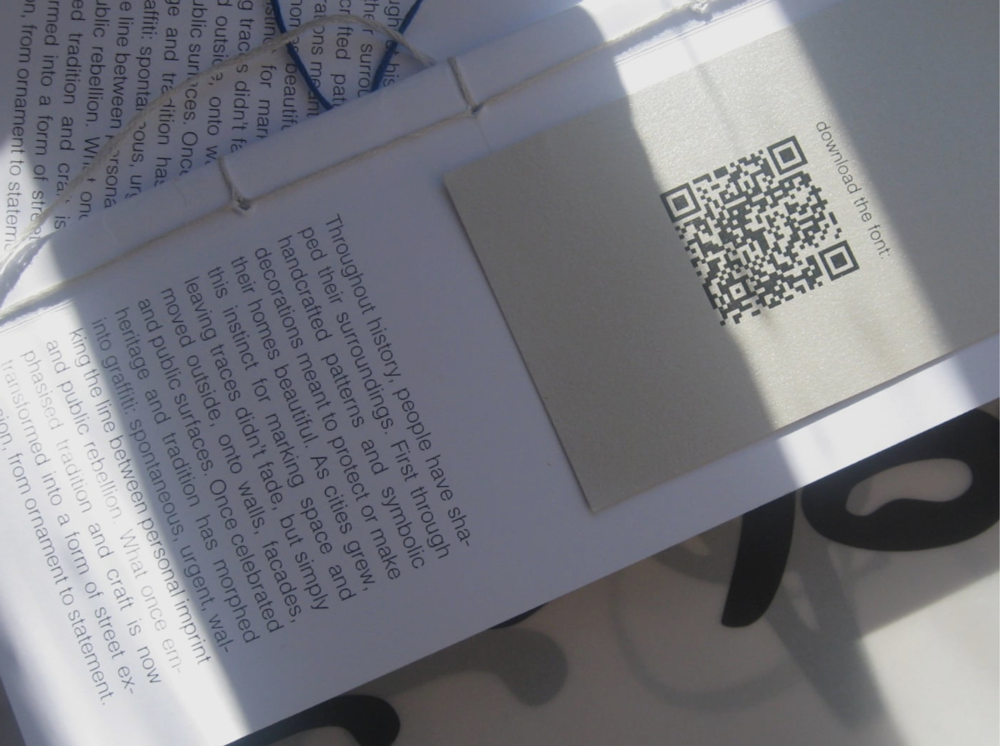
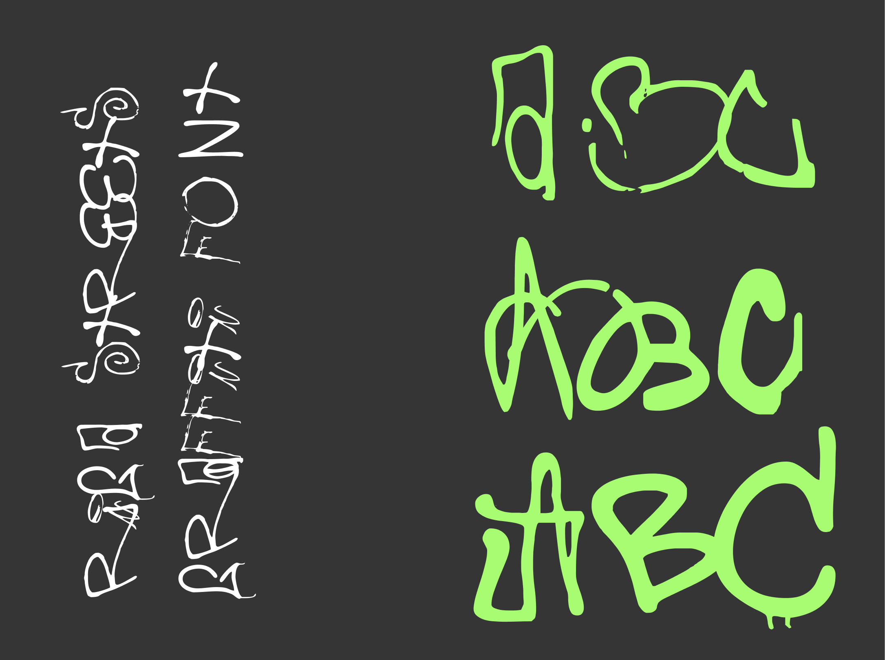
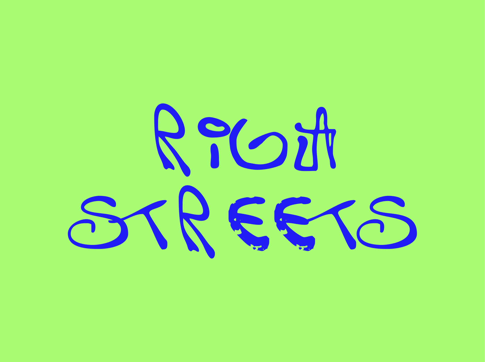
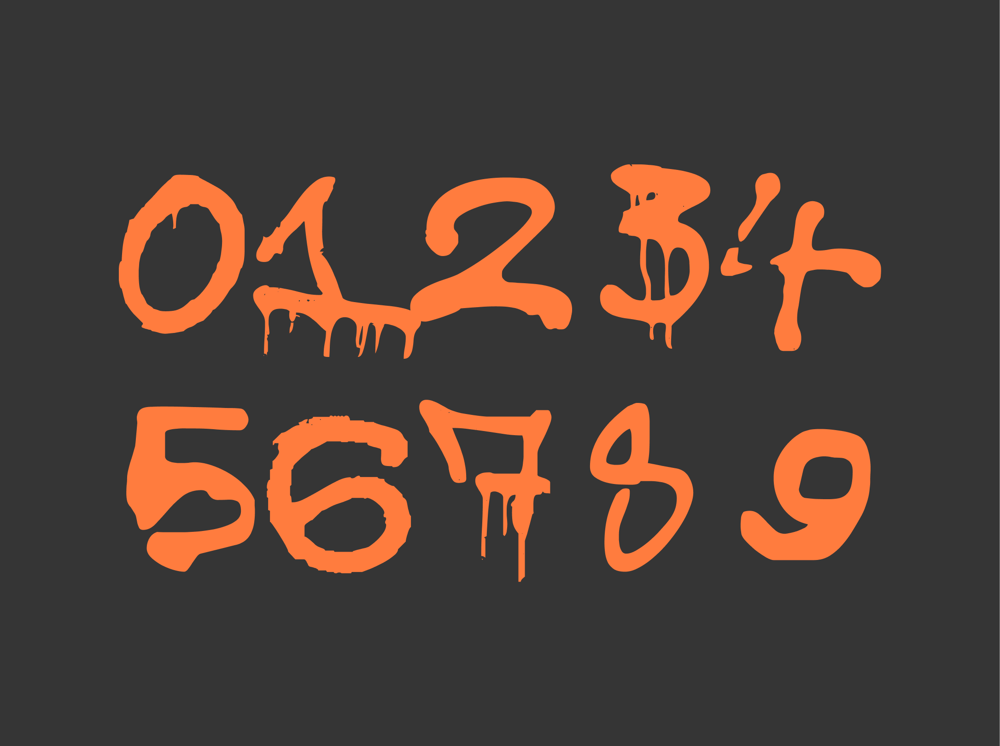
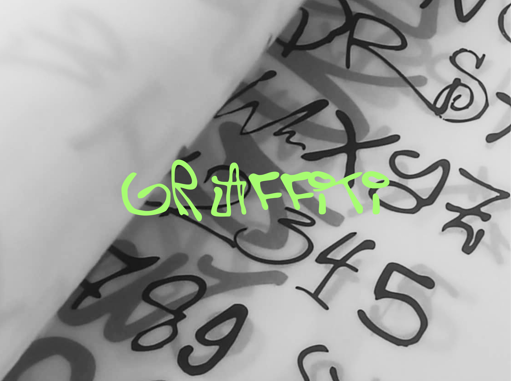
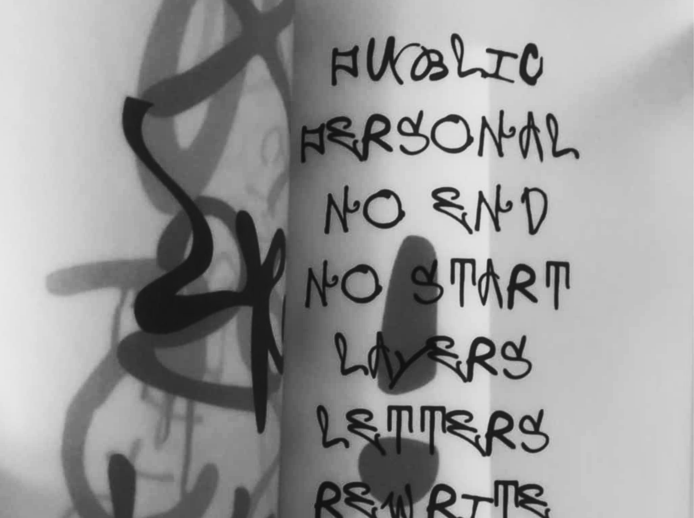
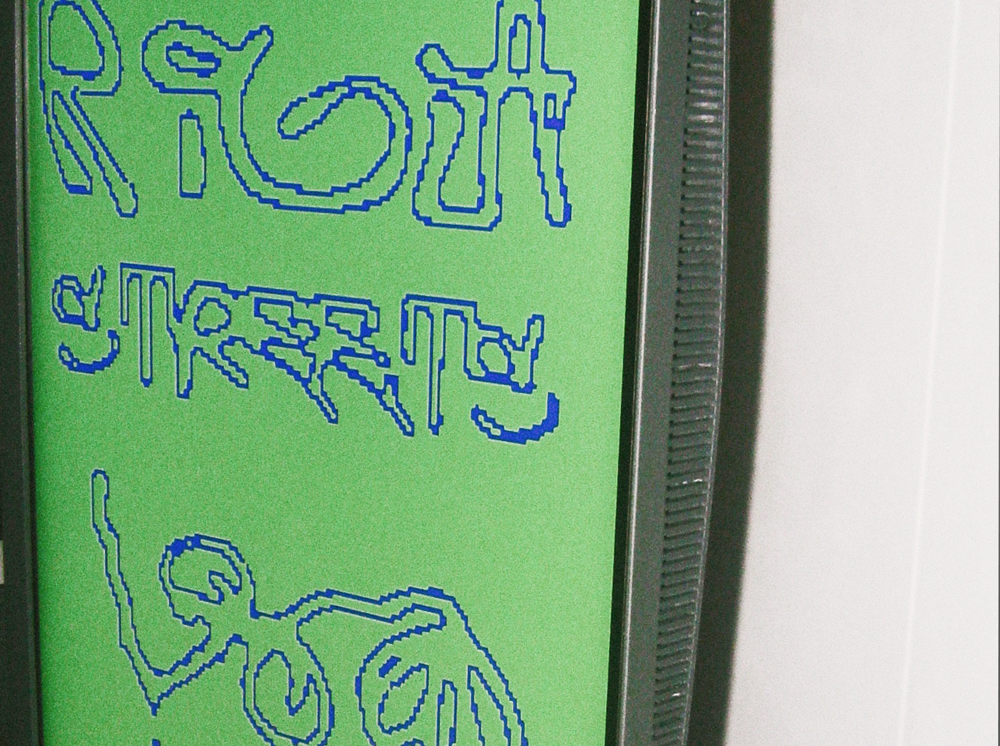

Riga, 2025
Riga is an experimental graffiti-style typeface that was created over the course of
four months by collecting and documenting graffiti in the streets around me during
my stay in Riga as part of the Erasmus+ program. At first, I was just documenting,
but the more I walked through the city, the more the project became something
personal – a way to connect not only with the new city but also with its rhythm, chaos, voice, and
traces of hundreds of anonymous citizen. This typeface is a way to capture these traces and transfer them into adifferent context
where they can be re–read and rewritten.
Get Riga in Thin, Regular and Bold on my gumroad for free ツᝰ








